Jeroen De Dauw
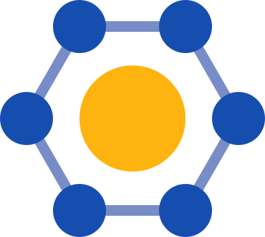
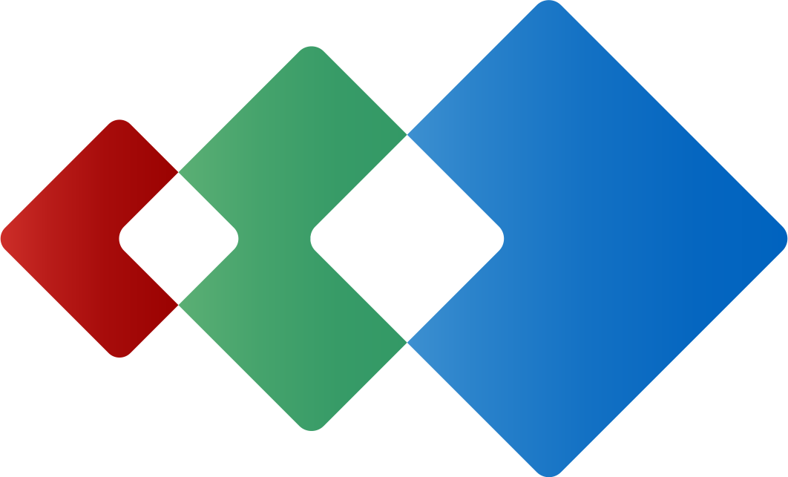
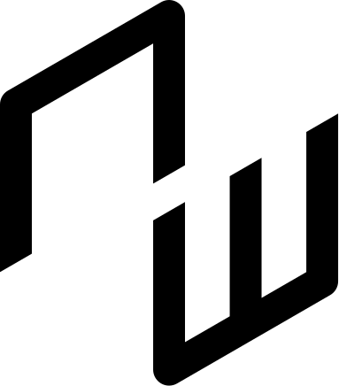
Why NeoWiki?
Data in wikitext
The '''Rijksmuseum''' in [[City::Amsterdam]] opened in [[Founded::1800]].{{Museum
|Type=National museum
|Founded=1800
|City=Amsterdam
|Architect=Pierre Cuypers
}}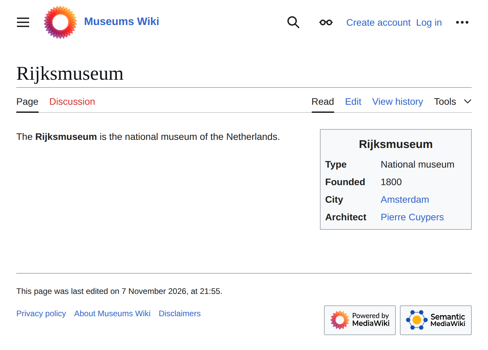
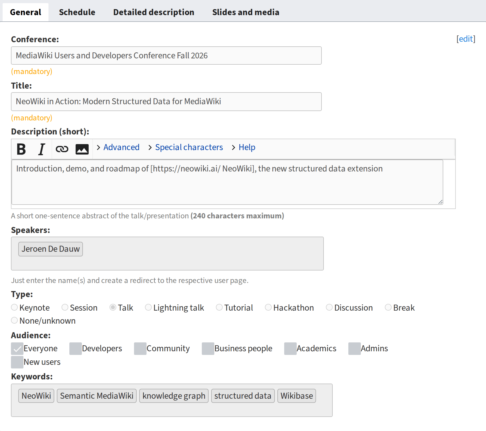
Data in JSON
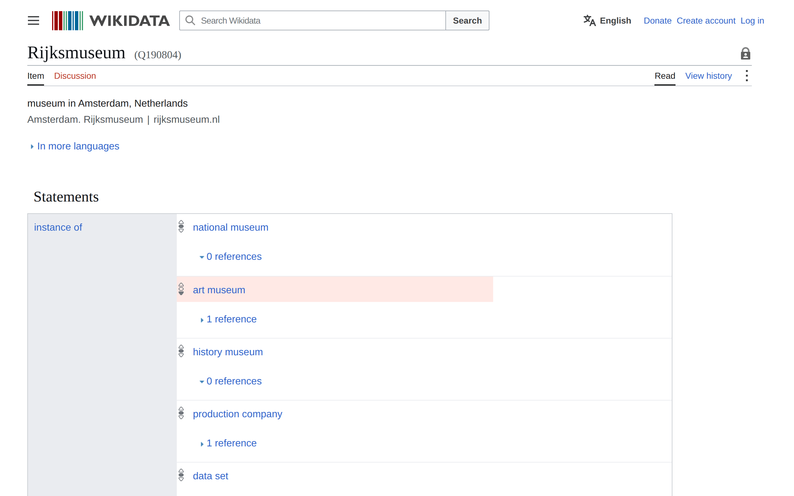
POST …/items/Q190804/statements
{
"statement": {
"property": { "id": "P131" },
"value": {
"type": "value",
"content": "Q9899"
}
}
}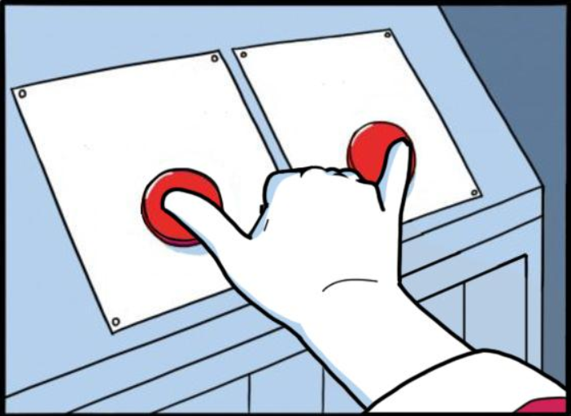
NiceJSON storage Customizable
display
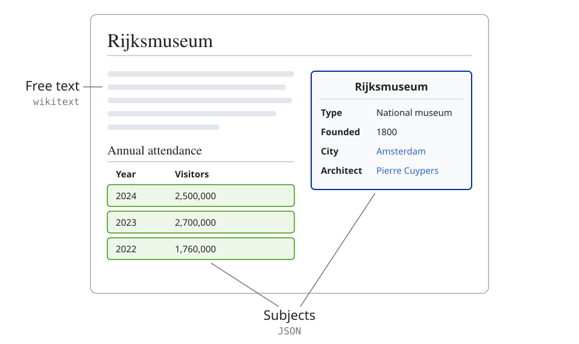
Property:Type
[[Has Typetype::Text]]
[[Allows value::National museum]]
[[Allows value::Art museum]]
[[Allows value::History museum]]
Property:Founded
[[Has Typetype::Date]]
[[Property description::Opening year@en]]
Template:Museum
{| class="infobox"
! colspan="2" | {{PAGENAME}}
|-
! Type
| [[Type::{{{Type|}}}]]
|-
! Founded
| [[Founded::{{{Founded|}}}]]
|-
! City
| [[City::{{{City|}}}]]
…
|}
Form:Museum
{{{for template|Museum}}}
{| class="formtable"
! Type:
| {{{field|Type|input type=dropdown}}}
|-
! Founded:
| {{{field|Founded|input type=date}}}
|-
! City:
| {{{field|City|input type=combobox}}}
…
|}
{{{end template}}}
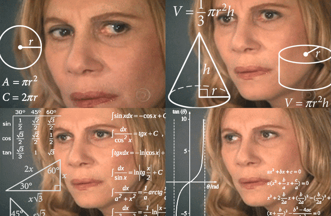
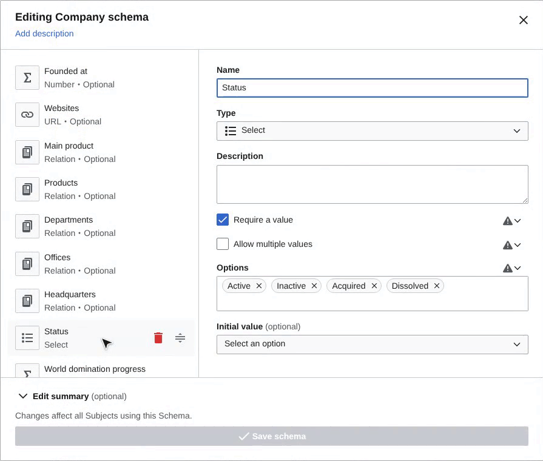
- SMW is powerful and unique, has issues
- Many lessons learned -> opportunity
- Notion, Airtable, etc -> need
Time for Something New
March 2026
October 2026
Next
2027
Product Vision
-
10x Improvement
-
Focus on value, not features
-
Coherent product
Building on NeoWiki
The foundation of ECHOLOT’s core system

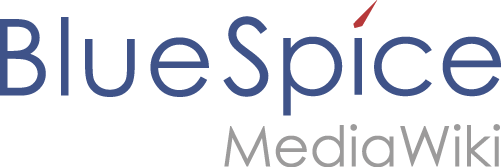
The structured-data layer of BlueSpice Galaxy
Built with AI in mind
Looking ahead
Some of what’s planned
Import tools
Including bulk import
Query visualizations
Tables, maps, charts, timelines, ...
More property types
EDTF dates, images, locations, external concepts, ...
Multilingual labels
Subjects, choice options, schemas, ...
Possible on today’s foundation
SMW and Wikibase data
Queried and visualized in NeoWiki
Edit values in query results
Requested for about 20 years
Built on top
Credits
- Built by
- Morne Alberts, Alistair Kim, Karsten Hoffmeyer, Jeroen De Dauw,
- Thanks to
- Hallo Welt!, everyone who tested early versions, and our ECHOLOT partners, especially Lozana Rossenova and George Bruseker
- Inspired by
- Semantic MediaWiki, Wikibase and the people behind them, especially Markus Krötzsch, Denny Vrandečić and Yaron Koren
Q&A
Get Involved
Professional Wiki
professional.wiki Professional Wiki @ProWiki @professional.wiki
NeoWiki vs Semantic MediaWiki
Forms and infoboxes
Without wikitext
Schemas
Types, constraints, display, ...
Optimized UI flows
For editing and browsing
Data stored in JSON
Writeable via the API
Standard query languages
SPARQL and Cypher
Ontology mappings
Easy interoperability
NeoWiki vs Wikibase
Forms
Constraints
Reader-friendly display
Standard ontology RDF
Inline queries
Multiple subjects per page
Qualifiers and references
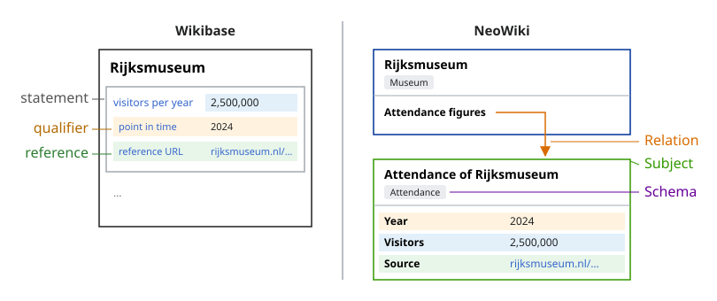
NeoWiki vs Bucket
Bucket
- Similar philosophy: serve common cases, keep code lean
- Designed for the gaming wiki use cases
- Optimized for power users who write Lua and SQL
NeoWiki adds
- High-UX views and forms
- Schemas with validation
- Relations, dates, ...
- Graph databases and queries
- RDF and ontology mappings
- Write access via the REST API
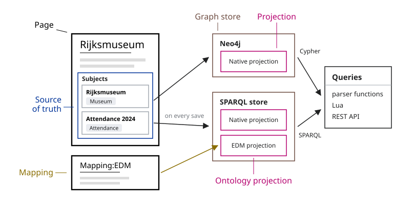